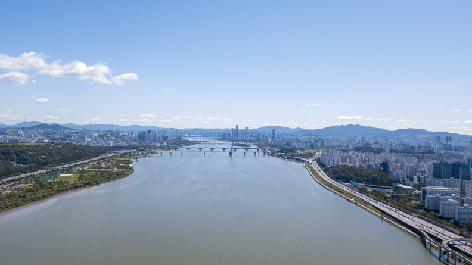
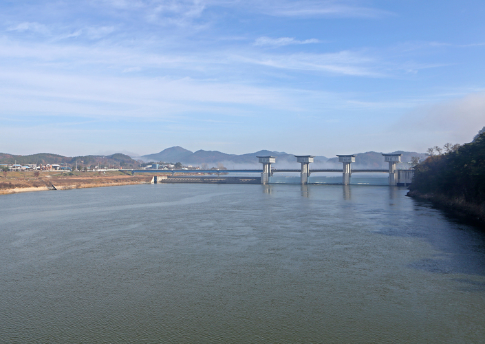
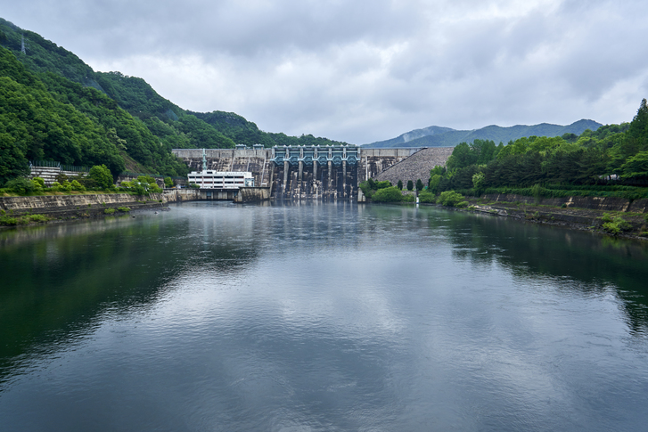
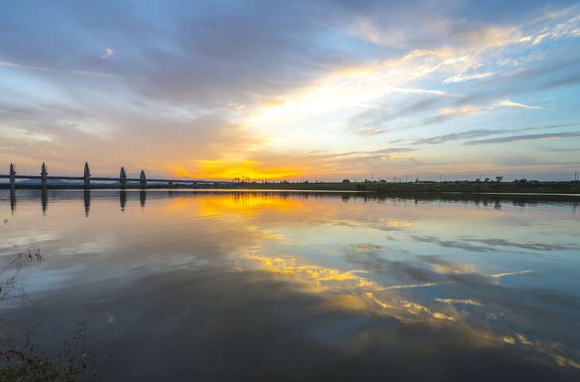

한강 (가평)
가평 지점 바로 하류에 위치한 팔당호는 수도권 주민 2,500만 명의 식수원으로 국내 최대의 취수원입니다. 규모가 가장 큰 상수원이며 장마철마다 주기적으로 오염원이 증가하는 등 모니터링이 필요한 팔당호의 상류인 가평을 목표 지점으로 선정하였습니다.

낙동강 (도개)
도개 지점은 경북 지역의 대표 취수원이 위치한 지점입니다. 대표 취수원인 만큼 주목도도 높아, 수질 개선을 위한 노력도 남다르며, 관련 데이터도 많이 축적되어 있습니다. 향후 효과 및 파급력을 고려하여 대표 취수원인 도개를 목표 지점으로 선정하였습니다.

금강 (현도)
아름다운 절경으로 유명한 금강의 현도 지점은 대전·충청 지역 400만 시민의 식수원으로 금강을 대표하는 상수원입니다. 녹조가 주기적으로 나타나는 등 모니터링의 필요성이 급증한 취수원인 현도를 목표 지점으로 선정하였습니다.

영산강 (나주)
전남 담양군에서 남서쪽으로 흘러 황해로 흘러드는 영산강은 본류에 상수원으로 사용하는 곳이 없어서 지점 선정이 모호하였으나, 본류이면서 대도시 부근에 위치한 나주 지점을 선정하였습니다.